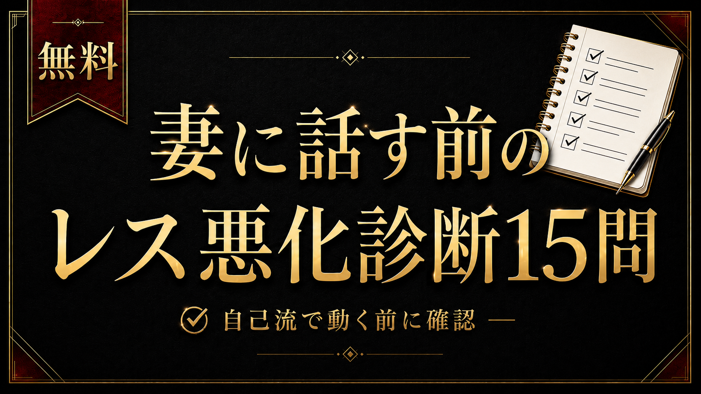

SELF CHECK

レス悪化危険度チェック
15問で、今の自分が
「妻に話していい段階」か
「まず整える段階」かを確認する
この診断は、セックスレスを解決するものではありません。妻に何かを言う前に、まず自分の焦り・態度・家庭内での空気を確認するためのセルフチェックです。
ABOUT
診断の前に
このページでは、回答を外部に送信しません。名前・メールアドレス・連絡先などの個人情報も入力しません。
結果は、妻の気持ちを断定するものではなく、夫側の行動や家庭内の空気を見直すための目安です。
0 / 15
いくつか、教えてください。
正解はありません。今の感覚に近いものを選んでください。
YOUR RESULT
TOTAL SCORE
0/30
0〜7点
判定
推奨アクション
CONTINUE READING
詳しい読み解きと、次にやることを確認する
この診断では、大まかな危険度まで確認できます。ただし、点数だけでは「何をやめるべきか」「どこから整えるべきか」までは分かりません。
note有料部分では、点数別の詳しい解説と、夫側がまず整える5つの土台を解説しています。
noteで詳しい解説を読む